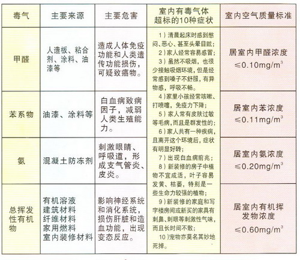

网页信息导航

1,我公司于2002年成立至今，具有丰富的污染治理经验。
2,我们拥有专业的技术人员、高素质的施工队伍、优质的产品以及完好的售后服务体系。


二、室内有机毒气超标的症状表现：
室内装饰协会环境检测中心透漏：室内污染每年“杀死”11万人
1、起床综合症：症状：起床时感到憋闷、恶心、头晕目眩。
2、心跳综合症：症状：新添家具后家里气味难闻，使人难以接受，并引发身体疾病；
3、类烟民综合症：症状：虽然不吸烟，也很少接触吸烟环境，但经常感到嗓子不舒服，有异物感，呼吸不畅；
4、幼童综合症：症状：小孩常咳嗽、打喷嚏、免疫力下降；
5、不孕综合症：症状：新婚夫妇长时间不孕，查不出病因；
6、家庭群发疾病综合症：症状：家人共有一种疾病，而且离开这个环境后，症状就有明显变化和好转;
7、宠物死亡综合症：症状：新搬家后，家养的宠物猫、狗甚至热带鱼莫名其妙的死掉，而且邻居家的也是这样；
8、植物枯萎综合症：症状：新装修后，室内植物不易成活，叶子发黄、枯萎、特别是一些生命力很强的植物也难以正常生长。
三、装修误区
通风能从根本上解决污染问题吗?
装修后，要经常打开门窗通风换气，以降低危害。但是人造板材中的甲醛是以游离方式缓慢释放的。当温度达到20-30度，湿度 达到30%-70%，甲醛释放量最大；在人体最佳适应温度20-25度，湿度在40%-60%时，甲醛释放周期长达5-15年。所以，通风换气只能减低危害程度，并不能从根本上解决问题。